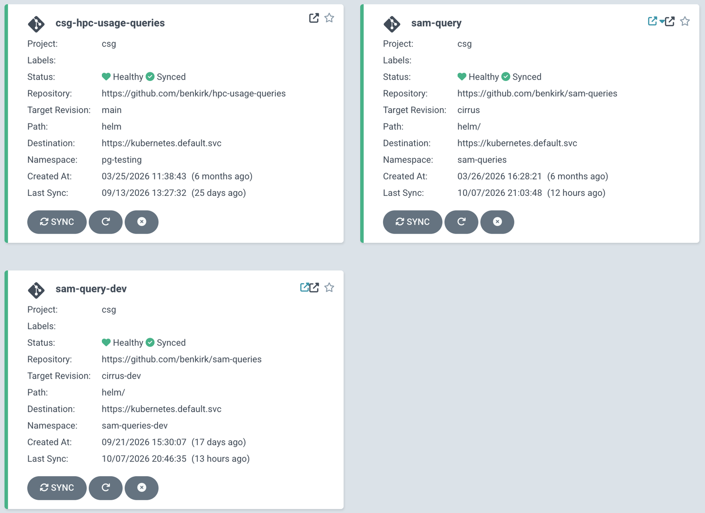
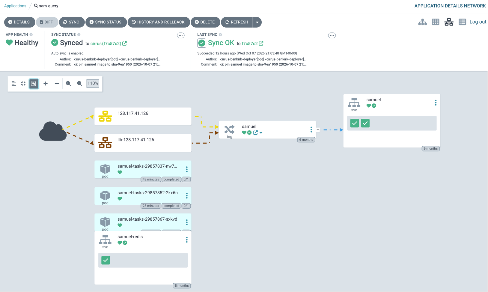
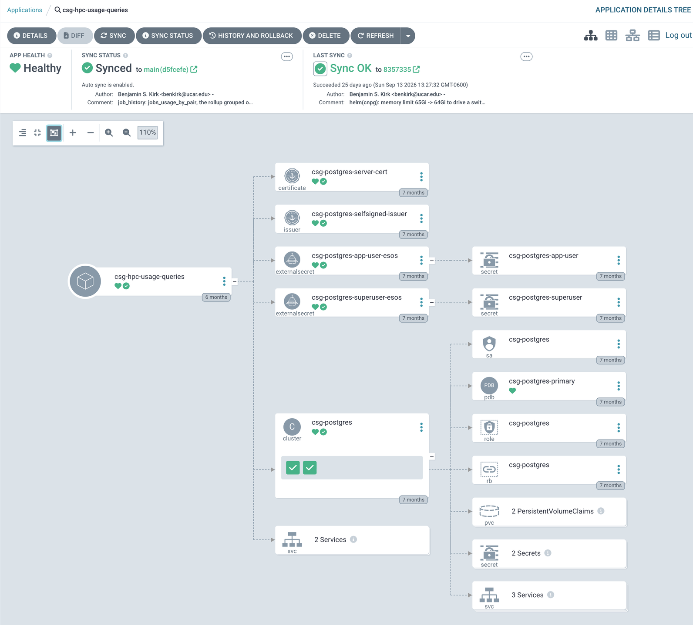

October 8, 2026
Deployment & Operations
NSF NCAR/CISL
From a commit to a pod, and keeping it there.
†About ten minutes from a merge into staging or main to new pods on samuel-dev or production. SAMuel only connects to csg-postgres; hpc-usage-queries owns and deploys it.
Fourteen workflows, one image, two architectures.
| Workflow | Does | Runs on |
|---|---|---|
sam-ci-docker |
MySQL, Postgres and perf suites | PRs, main |
browser-smoke |
every dashboard in Chromium | PRs |
| two install workflows | install paths, CLI smoke | PRs |
ci-staging, mega-linter |
secrets, linters, Terraform, Helm | PRs |
build-images-cirrus-deploy |
build samuel, pin a cirrus branch |
main, staging |
| two promotion workflows | one staging-to-main PR; reset staging |
staging, main |
| four cleanup workflows | prune images, runs and logs | scheduled |
deploy-staging |
the retired AWS deploy | by hand |
test-stack setup action.How it builds
What it bought
†The arm64 half used to be built under QEMU emulation on an amd64 runner. Native runners replaced that, for the speed.
CI writes one line; CIRRUS’s Argo CD does the rest. Thanks, CIRRUS.
update-helm resets the cirrus branch to the triggering commit’s tree, rewrites that line, and force-pushes one commit.cirrus and cirrus-dev. Its only bypass is a GitHub App the workflow uses, so no human, and no other workflow, can push a deploy.workflow_dispatch builds any branch. The target is dev by default, and prod only when asked for by name.helm/values.yaml, not staging’s. Keep the branch rebased on staging, or dev quietly loses a staging-only chart change.| prod | dev | |
|---|---|---|
| App, namespace | sam-query, sam-queries |
sam-query-dev, sam-queries-dev |
| Chart values | values.yaml |
values.yaml + values-dev.yaml |
| SAM database | sam-sql (MySQL VM) |
sam_dev on csg-postgres |
| Replicas | 2, with a disruption budget | 1 |
| Mail, XRAS, Jira | on | off |
| Tasks switched off | 2 | 5 |
| Redis | 192 MB | 64 MB |

sam-query follows cirrus, sam-query-dev follows cirrus-dev; the third app is the Postgres cluster.
samuel image also runs on casper and derecho: the status collectors and the accounting jobs from Part 4.staging and main are also straightforward.nwc1Two pods, a cache, a CronJob, and nine secrets.

sam-query in Argo CD: the ingress, the samuel service, the CronJob’s task pods and Redis.
gunicorn gthread, 9 workers × 8 threads. A slow scan holds a thread, not a process.sam database only. A secondary database down reads degraded, still serving (Part 3).Ingress
samuel.k8s.ucar.edu, the platform name.nginx-external.Secrets
--yes.samuel-tasks wakes at 7,22,37,52 past each hour, UTC, and never overlaps itself.task_run ledger claims each slot once, so a retry or a late wake can’t run it twice.SAM_TASKS_DISABLED in the same change.†Each trap now has a test that reads or renders the chart.
csg-postgres: job history, scans, status, and samuel-dev.
csg-postgres at a glanceShape
hpc-usage-queries repo; Argo renders its chart.Settings
pg_stat_statements on.csg-postgres, drawnWho writes and reads through which name; the two instances trade roles on a switchover.
csg-postgres in Argo CD
The csg-hpc-usage-queries app: a certificate, two secrets, the cluster and all it owns.
| Database | Written by | Read by |
|---|---|---|
derecho_jobs, casper_jobs |
jobhist-sync |
My Jobs, via the replica |
campaign, destor |
the weekly scans rebuild | My Data, via the replica |
system_status |
SAMuel and the collectors | the Status dashboard |
system_status_dev, sam_dev |
samuel-dev; make refresh-dev |
samuel-dev |
sam database gates readiness (Part 3).A laptop, samuel-dev, production, and who watches them.
| Laptop | samuel-dev | Production | |
|---|---|---|---|
| Where | Docker Compose | CIRRUS, sam-queries-dev |
CIRRUS, sam-queries |
| Address | localhost:5050 |
samuel-dev.k8s.ucar.edu |
sam.hpc.ucar.edu |
| SAM data | obfuscated MySQL snapshot | sam_dev, a copy |
the real thing |
| Sign-in | stub login | Entra ID | Entra ID |
| Mail out | never | never | yes |
| Follows | your working tree | staging |
main |
| Service | Profile | Port | For |
|---|---|---|---|
samuel |
default | 7050 | the production image |
samuel-dev |
default | 5050 | the dev image, code-synced (--watch) |
cache |
default | 6379 | Redis |
mysql |
default | 3306 | the obfuscated snapshot |
mysql-test |
test | 3307 | the only database tests may touch |
postgres-test |
test | 5434 | the Postgres suite |
postgres |
pg | 5433 | a local Postgres SAM |
values-dev.yaml on top: one replica, Postgres, its own status database.make refresh-dev rebuilds its data from a fresh snapshot.helm/tests/test-dev-render.sh renders dev and fails if it shares a secret, host, database or lever with prod.cirrus_healthcheck.sh: a read-only probe of the release, start to finish.cirrus_watch.sh: a tick that prints only what changed since the last one: web, latency, cache, pods, CronJob, XRAS.cirrus_weblog_audit.sh: traffic, rate limits, and security failures.cirrus_redis_purge.sh: dry-run by default. The only one that changes anything, and only with --yes.†All four take --env dev.
| Skill | Load it | It drives | It reports |
|---|---|---|---|
watch-prod |
for a recurring prod watch | cirrus_watch.sh on a timer |
changes only; a quiet hour is one line |
watch-dev |
after a staging merge |
cirrus_watch.sh, with --env dev |
did the pin roll, is dev healthy |
profile-dev |
for a load or latency pass | a real signed-in session, at concurrency | where the time went: database, plugin, or Python |
watch-cnpg |
for a cluster watch (peer repo) | cnpg_watch.sh |
failovers, connections, lag, slow queries |
staging to samuel-dev, main to production, by one pinned image tag.csg-postgres holds everything but production SAM, and rolls without a gap.